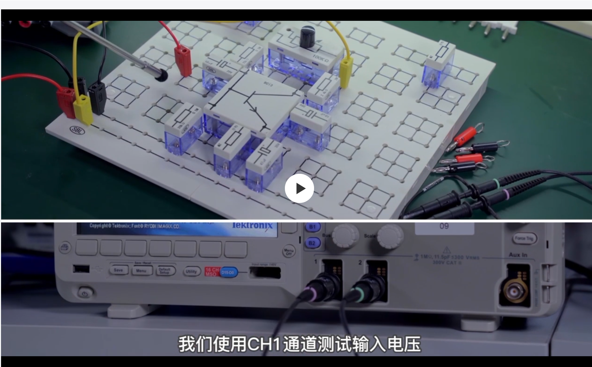

页面尚未完成初始化。若本提示一直存在，说明脚本没有启动或运行出错，请勿继续等待。
实验台
现在是空板，还没有安装元件。点击“演示这一步”，元件会随步骤逐件出现。
手机可左右滑动查看整板
调偏置 R_P 示意：往右调大 → 静态 V_C 上升
Tektronix MSO2012B · 常用操作面板演示
Vertical · 垂直
Position 位置Scale 幅值
Horizontal · 水平
Position 位置Scale 时基
Trigger · 触发
Level 电平
Acquire · 采集
黄色 = 输入
青色 = 输出
1 · 接输入探头
2 · 接输出探头
屏幕波形与读数来自教学模型；RMS 对削顶波形按采样点计算，不能当成课堂实测值。
Tektronix AFG1062 风格 · DG4062 对应名称相近
CH1 · Sine / 正弦
1.000 kHz
Frequency
Amplitude
Offset
Load
Output
CH1 OUT → 输入端；BNC 外壳/黑夹 → GND
10 mV RMS 正弦波 = 28.3 mV p-p。设 High Z 后，以 CH1 实测输入有效值为准。
KEITHLEY 2110 · 万用表测量演示
— V
V / Ω · 红线COM · 黑线I 电流孔 · 此处不用
RIGOL DP832A · 直流电源演示
CH1 电压
12.000 V
12.000 V
输出状态
OFF
OFF
+ → 板上 +12 V− → GND
先输出关闭、检查接线；确认后设置 12 V 再打开通道。
这里只演示操作逻辑和典型现象。按钮位置按常用面板整理；现场屏幕与菜单名称以仪器实际显示为准。
查看你提供的九孔板参考照片

填写课堂实测值；自动保存在本浏览器。